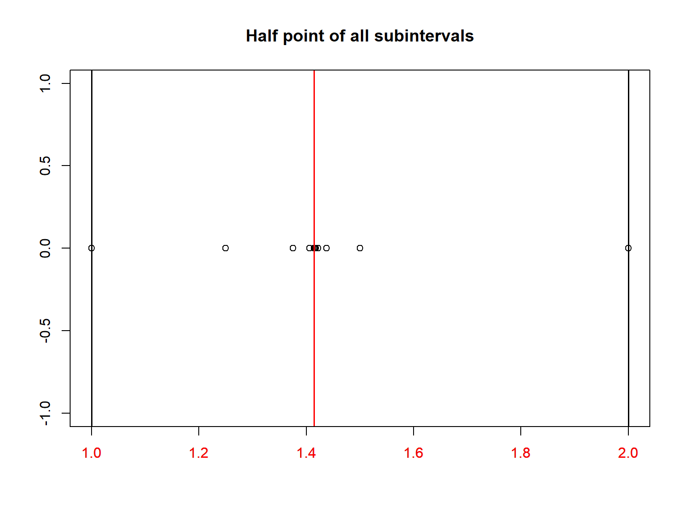

fn <- function(x){
return(x - 2^(0.5))
}
i <- 1; half_list <- list()
# initialize interval
a <- 1; b <- 2
# begin Bisection method
while(i <= 500){
# cut into half
halfpoint <- (a + b)/2
half_list <- append(half_list, halfpoint)
# check which subinterval have positive & negative sign
if (fn(a) < 0 & fn(halfpoint) > 0){
a <- a
b <- halfpoint
} else if(fn(halfpoint) < 0 & fn(b) > 0){
a <- halfpoint
b <- b
}
i <- i + 1
}Those born after the 1990s are, in many ways, a fortunate generation. We live in an era where technological advancements. The convenience and accessibility of modern tools make problem solving faster than ever but they also come with a hidden cost.
Living in such easy times often makes us take things for granted. We tend to overlook the long and difficult journey that led to the technologies and knowledge we now enjoy. The shortcuts we rely on, whether in the form of powerful computational tools or education systems that emphasize on results over understanding the “why” behind them have made us less curious about the origins and motivations of the concepts we use.
As a result, many of us have become users rather than thinkers; we can apply existing methods, but we rarely question how or why they were developed. This mindset limits our ability to innovate more meaningful solutions that could once again push humanity forward.
In this post, let us take a step back and revisit one of the earliest and simplest numerical methods in history: the bisection method. By understanding its motivation and how it works, we can rekindle a bit of that appreciation for the thought and effort behind the tools we often take for granted.
Let say we want to find the decimal numbers of \(\sqrt{2}\), for most of us, it is easy right? Take a scientific calculator, just push in the \(\sqrt{}\) and \(2\) button in a calculator and then push in the conversion button to decimal number. The answer \(1.4142135..\) should appear and we are done. Great! Well that is okay if you have a scientific calculator. But in case where you do not have one and need to convert \(\sqrt{2}\) into decimal number, what are you going to do? If you are trying to develop your own computer with limited memory, are you going to hardcode the decimal numbers into your computer? I can guarantee that your computer will perform really slow compare to your brain.
So in this situation, we need use some basic trick that will allow us to at least approximate the irrational number. In our case, let say that we have found a number \(x\) that is the decimal number representation for \(\sqrt{2}\), we can then write the following expression which is true.
\[x-\sqrt{2}=0\]
We can turn expression above into a function because we still do not know what decimal number the \(x\) should be. And this problem that we created just now is called the root-finding problem because it involves in finding a solution (root) of an equation of the form \(f(x)=0\).
The bisection method was a technique developed as far back to at least 1700 B.C.E. It works by repeatedly cut a number interval, say \([a,b]\), into half (bisecting) and at each step, finding the subinterval which containing the root.
The following algorithm is an example of the steps done in this technique. Note that this is not the exact method how computer was programmed to calculate \(\sqrt{2}\).
The following are the halfpoints which were generated after 10 iterations. As you can see, the movement of the halfpoints are closer to the \(\sqrt{2}\) (red vertical line) over the time.

By the end of the 500th iteration, we can see that the interval \([a,b]\) has now become so close to the exact value of \(\sqrt{2}\).
Interval at 500th iteration: [ 1.414214 , 1.414214 ]The bisection method may appear simple, even primitive, when compared to the complex numerical solvers we have today. Yet, within its simplicity lies the foundation of many modern computational methods. It represents a time when mathematics was driven by curiosity, patience, and the desire to understand.
Through this humble method, we can appreciate how far human thought has come. Every algorithm we now use, no matter how sophisticated, stands on the shoulders of basic yet profound ideas like this. By revisiting the past, we remind ourselves that true progress is not merely about faster results, but about deeper understanding.
As learners in an age of convenience, we should strive to balance efficiency with comprehension and not only use the tools available to us but also to grasp the reasoning that shaped them. In doing so, we honor the spirit of discovery that brought us here and ensure that innovation continues to grow from understanding, not just automation.
References
Gökçe, Semirhan, and Pınar Guner. 2021. “Forty Years of Mathematics Education: 1980-2019.” International Journal of Education in Mathematics, Science and Technology 9 (April): 514–39. https://doi.org/10.46328/ijemst.1361.
Hidayat, Riyan, Ahmad Fauzi Mohd Ayub, Harris Shah Abd Hamid, and Nurihan Nasir. 2025. “Difficulties in Instructing Mathematical Modeling: Case Study in Malaysia.” International Electronic Journal of Mathematics Education 20 (April): em0811. https://doi.org/10.29333/iejme/15815.
L., Burden Richard, and Faires J. Douglas. 2011. Numerical Analysis. 9th ed. Brooks/Cole, Cengage Learning.